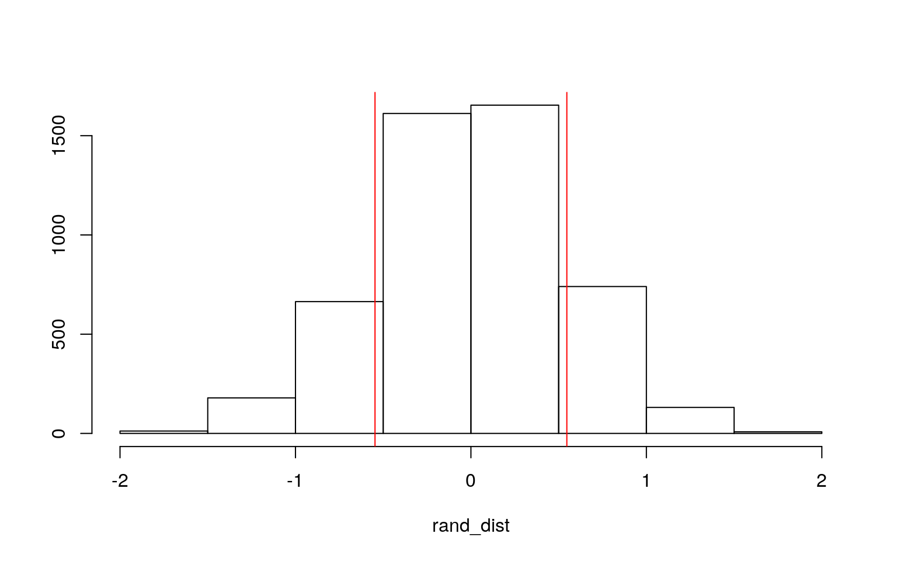

#0. Introduction
For project 2, I decided to work with data derived from the popular MOBA (multiplayer online battle arena) League of Legends as developed by Riot. In this video game, players select unique champions to combat other players in team-based matches. My variables consist of the following: id (individual champions), origin (where the champion hails from in lore), class (the champions; playstyle), diff (the technical difficulty Riot rates playing a champion), hp (the champions’ level 1 base health), ad (the champions’ level 1 base attack damage), armor (the champions’ level 1 base armor), mr (the champions’ level 1 base magic resist), skins (the number of skins a champion has, excluding event exclusives), pr (the match pick rate of a champion), wr (the match win rate of a champion), and br (the match ban rate of a champion). In total, there are 155 champions in game, meaning that for this project, I have 155 observations.
#1. MANOVA Testing
library(tidyverse)
lol <- read_csv("lol.csv")
lol1 <- manova(cbind(hp, ad, armor, mr, skins, pr, wr, br)~class,data=lol)
summary(lol1)## Df Pillai approx F num Df den Df Pr(>F)
## class 5 1.3675 6.8233 40 725 < 2.2e-16 ***
## Residuals 148
## ---
## Signif. codes: 0 '***' 0.001 '**' 0.01 '*' 0.05 '.' 0.1
' ' 1summary.aov(lol1)## Response hp :
## Df Sum Sq Mean Sq F value Pr(>F)
## class 5 51739 10347.9 10.892 6.159e-09 ***
## Residuals 148 140609 950.1
## ---
## Signif. codes: 0 '***' 0.001 '**' 0.01 '*' 0.05 '.' 0.1
' ' 1
##
## Response ad :
## Df Sum Sq Mean Sq F value Pr(>F)
## class 5 2691.3 538.27 30.636 < 2.2e-16 ***
## Residuals 148 2600.4 17.57
## ---
## Signif. codes: 0 '***' 0.001 '**' 0.01 '*' 0.05 '.' 0.1
' ' 1
##
## Response armor :
## Df Sum Sq Mean Sq F value Pr(>F)
## class 5 3813.2 762.64 36.288 < 2.2e-16 ***
## Residuals 148 3110.4 21.02
## ---
## Signif. codes: 0 '***' 0.001 '**' 0.01 '*' 0.05 '.' 0.1
' ' 1
##
## Response mr :
## Df Sum Sq Mean Sq F value Pr(>F)
## class 5 109.59 21.9172 11.21 3.554e-09 ***
## Residuals 148 289.36 1.9551
## ---
## Signif. codes: 0 '***' 0.001 '**' 0.01 '*' 0.05 '.' 0.1
' ' 1
##
## Response skins :
## Df Sum Sq Mean Sq F value Pr(>F)
## class 5 7.65 1.5306 0.3266 0.8963
## Residuals 148 693.70 4.6871
##
## Response pr :
## Df Sum Sq Mean Sq F value Pr(>F)
## class 5 399.43 79.885 4.5458 0.000694 ***
## Residuals 148 2600.86 17.573
## ---
## Signif. codes: 0 '***' 0.001 '**' 0.01 '*' 0.05 '.' 0.1
' ' 1
##
## Response wr :
## Df Sum Sq Mean Sq F value Pr(>F)
## class 5 11.87 2.3749 0.7585 0.5811
## Residuals 148 463.39 3.1310
##
## Response br :
## Df Sum Sq Mean Sq F value Pr(>F)
## class 5 966.3 193.262 2.5541 0.03003 *
## Residuals 148 11198.6 75.666
## ---
## Signif. codes: 0 '***' 0.001 '**' 0.01 '*' 0.05 '.' 0.1
' ' 1
##
## 1 observation deleted due to missingnesspairwise.t.test(lol$hp, lol$class, p.adj="none")##
## Pairwise comparisons using t tests with pooled SD
##
## data: lol$hp and lol$class
##
## Assassin Fighter Mage Marksman Support
## Fighter 0.3384 - - - -
## Mage 3.8e-05 7.8e-10 - - -
## Marksman 0.0946 0.0020 0.0071 - -
## Support 0.0023 1.3e-05 0.6190 0.0862 -
## Tank 0.9523 0.2872 2.8e-05 0.0973 0.0022
##
## P value adjustment method: nonepairwise.t.test(lol$ad, lol$class, p.adj="none")##
## Pairwise comparisons using t tests with pooled SD
##
## data: lol$ad and lol$class
##
## Assassin Fighter Mage Marksman Support
## Fighter 0.032 - - - -
## Mage 2.7e-09 < 2e-16 - - -
## Marksman 0.143 4.2e-05 4.5e-07 - -
## Support 1.1e-07 1.5e-14 0.731 9.5e-06 -
## Tank 0.708 0.076 8.8e-11 0.056 9.9e-09
##
## P value adjustment method: nonepairwise.t.test(lol$armor, lol$class, p.adj="none")##
## Pairwise comparisons using t tests with pooled SD
##
## data: lol$armor and lol$class
##
## Assassin Fighter Mage Marksman Support
## Fighter 0.00053 - - - -
## Mage 1.2e-07 < 2e-16 - - -
## Marksman 0.03006 5.3e-10 0.00047 - -
## Support 0.03943 0.37182 3.6e-12 3.1e-05 -
## Tank 0.00029 0.43722 < 2e-16 3.6e-09 0.16249
##
## P value adjustment method: nonepairwise.t.test(lol$mr, lol$class, p.adj="none")##
## Pairwise comparisons using t tests with pooled SD
##
## data: lol$mr and lol$class
##
## Assassin Fighter Mage Marksman Support
## Fighter 0.04310 - - - -
## Mage 7.7e-07 7.8e-05 - - -
## Marksman 1.0e-07 8.8e-06 0.39204 - -
## Support 0.00019 0.01161 0.59315 0.23180 -
## Tank 0.24087 0.48339 0.00011 1.4e-05 0.00579
##
## P value adjustment method: nonepairwise.t.test(lol$skins, lol$class, p.adj="none")##
## Pairwise comparisons using t tests with pooled SD
##
## data: lol$skins and lol$class
##
## Assassin Fighter Mage Marksman Support
## Fighter 0.67 - - - -
## Mage 0.41 0.60 - - -
## Marksman 0.58 0.84 0.79 - -
## Support 0.33 0.46 0.74 0.60 -
## Tank 0.39 0.55 0.88 0.71 0.86
##
## P value adjustment method: nonepairwise.t.test(lol$pr, lol$class, p.adj="none")##
## Pairwise comparisons using t tests with pooled SD
##
## data: lol$pr and lol$class
##
## Assassin Fighter Mage Marksman Support
## Fighter 0.4605 - - - -
## Mage 0.0468 0.1029 - - -
## Marksman 0.0495 0.0014 1.1e-05 - -
## Support 0.9837 0.4747 0.0583 0.0660 -
## Tank 0.3144 0.6575 0.3643 0.0021 0.3281
##
## P value adjustment method: nonepairwise.t.test(lol$wr, lol$class, p.adj="none")##
## Pairwise comparisons using t tests with pooled SD
##
## data: lol$wr and lol$class
##
## Assassin Fighter Mage Marksman Support
## Fighter 0.91 - - - -
## Mage 0.80 0.85 - - -
## Marksman 0.77 0.82 0.96 - -
## Support 0.32 0.21 0.17 0.18 -
## Tank 0.30 0.18 0.15 0.16 0.97
##
## P value adjustment method: nonepairwise.t.test(lol$br, lol$class, p.adj="none")##
## Pairwise comparisons using t tests with pooled SD
##
## data: lol$br and lol$class
##
## Assassin Fighter Mage Marksman Support
## Fighter 0.1012 - - - -
## Mage 0.0030 0.0707 - - -
## Marksman 0.0082 0.1482 0.8433 - -
## Support 0.0193 0.2187 0.9058 0.9653 -
## Tank 0.0132 0.1953 0.8162 0.9643 0.9361
##
## P value adjustment method: none#Probability of Having a Type I error
1-.95^129## [1] 0.9986623#Bonferroni Correction
#Divide original significance level of 0.05 by 129 because we performed a total of 129 tests: 1 MANOVA, 8 ANOVAs, 129 post-hoc tests.
.05/129## [1] 0.0003875969#MANOVA Assumptions
#Formal test for normality
library(rstatix)
group <- lol$class
DVs <- lol %>% select(hp, ad, armor, mr, skins, pr, wr, br)
#Test multivariate normality for each group (null: normality met)
sapply(split(DVs,group), mshapiro_test)## Assassin Fighter Mage Marksman Support Tank
## statistic 0.7171199 0.7312037 0.4034181 0.4631489
0.4934242 0.2358739
## p.value 0.000127166 1.585479e-07 1.248646e-10
1.650978e-08 5.262268e-06 2.693078e-09#separate covariance matrices for each group
lapply(split(DVs, group), cov)## $Assassin
## hp ad armor mr skins pr wr br
## hp 680.408497 42.094771 62.90196078 -6.3725490 2.0816993
-4.95000000 21.9401634 -2.9915033
## ad 42.094771 14.839869 8.13725490 4.3333333 2.3954248
-0.75000000 0.5740850 -4.6111111
## armor 62.901961 8.137255 30.00000000 0.5294118
-1.1372549 0.01764706 0.8872549 -4.2039216
## mr -6.372549 4.333333 0.52941176 4.9411765 2.1960784
0.35882353 0.2109804 -0.7666667
## skins 2.081699 2.395425 -1.13725490 2.1960784 6.8398693
-1.30882353 0.1941503 -7.7418301
## pr -4.950000 -0.750000 0.01764706 0.3588235 -1.3088235
4.98617647 0.7153824 15.6741176
## wr 21.940163 0.574085 0.88725490 0.2109804 0.1941503
0.71538235 2.0899624 3.4275752
## br -2.991503 -4.611111 -4.20392157 -0.7666667 -7.7418301
15.67411765 3.4275752 79.3014379
##
## $Fighter
## hp ad armor mr skins pr wr
## hp 1263.58583 24.22203765 21.6566999 -10.17054264
-16.6816168 -34.52148394 10.65420819
## ad 24.22204 18.06644518 7.3737542 0.68106312 0.1439646
-0.03006645 0.46338317
## armor 21.65670 7.37375415 15.0398671 0.49169435
-1.3687708 -0.47596899 0.94864341
## mr -10.17054 0.68106312 0.4916944 1.49280177 0.3565891
0.69955703 -0.08633444
## skins -16.68162 0.14396456 -1.3687708 0.35658915
3.6135105 1.48842746 0.54522702
## pr -34.52148 -0.03006645 -0.4759690 0.69955703 1.4884275
10.25598007 1.65180066
## wr 10.65421 0.46338317 0.9486434 -0.08633444 0.5452270
1.65180066 3.73669236
## br -61.42691 -0.39800664 2.6671650 1.99424142 0.4400332
23.02131229 1.75136102
## br
## hp -61.4269103
## ad -0.3980066
## armor 2.6671650
## mr 1.9942414
## skins 0.4400332
## pr 23.0213123
## wr 1.7513610
## br 120.3958693
##
## $Mage
## hp ad armor mr skins pr wr br
## hp 581.105169 8.071301 13.8413547 7.5686275 -12.77540107
-4.7666667 -5.07966132 27.9819964
## ad 8.071301 15.629234 3.5098039 2.7522282 -1.54367201
1.5818182 1.04896613 6.2342246
## armor 13.841355 3.509804 14.0641711 0.6702317
-0.29411765 2.9454545 1.44907308 6.9953654
## mr 7.568627 2.752228 0.6702317 1.8823529 -0.20320856
-0.1515152 -0.57789661 -0.2167558
## skins -12.775401 -1.543672 -0.2941176 -0.2032086
5.17379679 0.1363636 0.07268271 -0.2782531
## pr -4.766667 1.581818 2.9454545 -0.1515152 0.13636364
6.1593939 0.39030303 10.3321212
## wr -5.079661 1.048966 1.4490731 -0.5778966 0.07268271
0.3903030 4.31264251 3.8767504
## br 27.981996 6.234225 6.9953654 -0.2167558 -0.27825312
10.3321212 3.87675045 75.4120856
##
## $Marksman
## hp ad armor mr skins pr wr br
## hp 1016.360000 6.1433333 14.0283333 4.1566667
11.03000000 56.19366667 3.1367667 -35.9690000
## ad 6.143333 17.6766667 -0.7800000 0.9566667 -0.20333333
-6.51633333 -2.2370667 -7.6531667
## armor 14.028333 -0.7800000 6.6733333 0.2966667
-0.18166667 -0.74266667 -0.4579667 0.1428333
## mr 4.156667 0.9566667 0.2966667 0.8266667 0.77000000
0.42633333 0.4200667 0.4290000
## skins 11.030000 -0.2033333 -0.1816667 0.7700000
5.27333333 -0.08316667 0.6614667 -4.6953333
## pr 56.193667 -6.5163333 -0.7426667 0.4263333 -0.08316667
54.48640000 2.1833200 25.2242000
## wr 3.136767 -2.2370667 -0.4579667 0.4200667 0.66146667
2.18332000 2.8690993 1.7547100
## br -35.969000 -7.6531667 0.1428333 0.4290000 -4.69533333
25.22420000 1.7547100 41.4626000
##
## $Support
## hp ad armor mr skins pr wr br
## hp 1839.66667 98.357143 219.928571 51.3333333 -31.309524
-20.7357143 -7.3100000 NA
## ad 98.35714 22.600000 19.142857 2.3285714 -5.328571
-1.9742857 -2.7907143 NA
## armor 219.92857 19.142857 62.571429 8.5714286 -3.642857
-14.8214286 -3.7978571 NA
## mr 51.33333 2.328571 8.571429 3.2666667 -0.147619
-3.4042857 0.4592857 NA
## skins -31.30952 -5.328571 -3.642857 -0.1476190 4.695238
3.7042857 1.3385714 NA
## pr -20.73571 -1.974286 -14.821429 -3.4042857 3.704286
32.7760000 0.8156429 NA
## wr -7.31000 -2.790714 -3.797857 0.4592857 1.338571
0.8156429 2.0375143 NA
## br NA NA NA NA NA NA NA NA
##
## $Tank
## hp ad armor mr skins pr wr
## hp 535.2078947 -12.32105263 21.1684211 -0.747368421
-1.2631579 9.51710526 -1.078421053
## ad -12.3210526 18.51578947 3.8631579 -0.021052632
-0.1052632 -0.66052632 2.485789474
## armor 21.1684211 3.86315789 26.0631579 -0.378947368
2.2631579 8.74210526 -1.124210526
## mr -0.7473684 -0.02105263 -0.3789474 0.800000000
0.0000000 -0.15263158 -0.006315789
## skins -1.2631579 -0.10526316 2.2631579 0.000000000
3.3684211 2.31578947 0.645263158
## pr 9.5171053 -0.66052632 8.7421053 -0.152631579
2.3157895 7.01986842 0.091842105
## wr -1.0784211 2.48578947 -1.1242105 -0.006315789
0.6452632 0.09184211 1.716157895
## br 0.2218421 -9.29842105 15.9336842 -1.544210526
3.1578947 10.29644737 -1.751315789
## br
## hp 0.2218421
## ad -9.2984211
## armor 15.9336842
## mr -1.5442105
## skins 3.1578947
## pr 10.2964474
## wr -1.7513158
## br 33.5297632#formal test of homogeneity of covariance
box_m(DVs, group)## # A tibble: 1 x 4
## statistic p.value parameter method
## <dbl> <dbl> <dbl> <chr>
## 1 NA NA 180 Box's M-test for Homogeneity of Covariance
MatricesI conducted a one-way MANOVA to figure out the effect of champion class (Assassin, Fighter, Mage, Marksman, Support, Tank) on eight dependent variables (health, armor, attack damage, magic resistance, skins, pick rate, win rate, and ban rate); I found that there were significant differences found among the champion classes for at least one of the dependent variables: Pillai trace = 1.3675, approximate F = 6.8233, and then my p-value of <2.2e-16 was less than the general significance value of 0.05. In total, I ran 1 MANOVA, 8 univariate ANOVAs, and 120 post-hoc tests. The probability that I made at least one Type-I error is 0.9986623. Additionally, in order to adjust my significance level to keep the Type-I error rate at 0.05, I used the Bonferroni correction and calculated 0.05/129 to get a new significance level of 0.0003875969.
In regard to significant differences, after implementing my Bonferroni corrected level of significance to my tests, I found that 5 of my post-hoc tests had several significant differences crop up. For HP and Class, there was significant difference in the following classes: Mage & Assassin, Mage & Fighter, Support & Fighter, and Tank & Mage. For AD and Class, there was significant difference in the following classes: Mage & Assassin, Support & Assassin, Mage & Fighter, Support & Fighter, Marksman & Mage, Support & Mage, Tank & Support, Tank & Mage, and Marksman & Fighter. For Armor and Class,there was significant difference in the following classes: Mage & Assassin, Mage & Fighter, Marksman & Fighter, Support & Mage, Tank & Mage, Support & Marksman, and Tank & Marksman. For MR and Class, there was significant difference in the following classes: Mage & Assassin, Marksman & Assassin, Mage & Fighter, Marksman & Fighter, and Tank & Marksman. And lastly, for PR and Class, there was only a significant difference detected between Marksman & Mage.
Finally, there were several MANOVA assumptions to consider. Of the ones I thought were important, my dataset definitely violated the random/independent samples as each observation was derived from the full set of champions that Riot offers to players. For the multivariate normality of DVs, all of them had p-values that rejected the null hypothesis of normality. And when attempting to test for homogeneity of covariance, I found that those were all violated as well.Since MANOVA assumptions are restrictive, it’s likely that I violated all, if not most, of them.
#2. Randomization Testing
library(tidyverse)
lol %>% filter(class %in% c("Marksman", "Support")) %>% group_by(class) %>% summarize(means_norm=mean(mr))%>%summarize(`mean_diff`=diff(means_norm))## # A tibble: 1 x 1
## mean_diff
## <dbl>
## 1 0.547rand_dist<-vector()
for(i in 1:5000){
boo<-data.frame(mr=sample(lol$mr),class=lol$class)
rand_dist[i]<-mean(boo[boo$class=="Marksman",]$mr)-
mean(boo[boo$class=="Support",]$mr)}
{hist(rand_dist,main="",ylab=""); abline(v = c(-0.5466667 , 0.5466667),col="red")}
mean(rand_dist>0.5466667 | rand_dist< -0.5466667)## [1] 0.2816After randomly sampling from my dataset 5000 times, I created a distribution of the mean differences between Marksman and Support classes’ mean magic resistance (mr). My null hypothesis is that there is no difference between the mean differences for these two classes while my alternative hypothesis is that there is a difference between these two classes’ mean differences. After generating the distribution of mean differences, we know that the actual mean difference is plotted at -0.5466667 and 0.5466667. Additionally, the likelihood that we’d get something that’s greater than or less than my actual mean diff of 0.5466667 by chance is 0.2812 or 28.12%. Therefore, I can’t reject my null hypothesis because there’s only a 28.12% chance that we’d get a mean difference as extreme as 0.5466667 for my mean differences if there was no true mean difference in my population.
#3. Linear Regression Model
library(lmtest)
library(sandwich)
#Regression model predicting coefficient estimates
lol3 <- lol %>% mutate(ad_c=ad - mean(ad,na.rm=T))
boba<-lm(pr ~ diff*ad_c, data=lol3)
summary(boba)##
## Call:
## lm(formula = pr ~ diff * ad_c, data = lol3)
##
## Residuals:
## Min 1Q Median 3Q Max
## -5.4484 -2.9352 -0.6484 1.2937 21.8234
##
## Coefficients:
## Estimate Std. Error t value Pr(>|t|)
## (Intercept) 5.2497 0.7690 6.827 2.05e-10 ***
## diffLow -0.6325 1.2180 -0.519 0.604
## diffModerate 0.6183 0.8918 0.693 0.489
## ad_c 0.1884 0.1678 1.123 0.263
## diffLow:ad_c -0.1299 0.2320 -0.560 0.576
## diffModerate:ad_c -0.2123 0.1825 -1.164 0.246
## ---
## Signif. codes: 0 '***' 0.001 '**' 0.01 '*' 0.05 '.' 0.1
' ' 1
##
## Residual standard error: 4.448 on 149 degrees of freedom
## Multiple R-squared: 0.02146, Adjusted R-squared:
-0.01138
## F-statistic: 0.6535 on 5 and 149 DF, p-value: 0.6593#Plotting the Regression with ggplot
ggplot(data=lol3, aes(ad_c, pr, color = diff)) + geom_smooth(method = "lm", se = F, fullrange = T) + geom_point() + geom_vline(xintercept=0, lty=2)#Assumption Assessments
#Linearity
resids<-boba$residuals
fitvals<-boba$fitted.values
ggplot()+geom_point(aes(fitvals,resids))+geom_hline(yintercept=0, col="red")#Normality
ks.test(resids, "pnorm", sd=sd(resids))##
## One-sample Kolmogorov-Smirnov test
##
## data: resids
## D = 0.14669, p-value = 0.002536
## alternative hypothesis: two-sided#Homoskedasticity
bptest(boba)##
## studentized Breusch-Pagan test
##
## data: boba
## BP = 7.4516, df = 5, p-value = 0.1892#Testing Regression with Robust Standard Errors
#Uncorrected SE values
summary(boba)$coef[,1:4]## Estimate Std. Error t value Pr(>|t|)
## (Intercept) 5.2496893 0.7689791 6.8268300 2.050224e-10
## diffLow -0.6324878 1.2180116 -0.5192790 6.043367e-01
## diffModerate 0.6182520 0.8918167 0.6932501 4.892318e-01
## ad_c 0.1884112 0.1678344 1.1226019 2.634123e-01
## diffLow:ad_c -0.1298534 0.2319609 -0.5598073
5.764515e-01
## diffModerate:ad_c -0.2123342 0.1824525 -1.1637779
2.463742e-01#Robust SE values
coeftest(boba, vcov = vcovHC(boba))[,1:4]## Estimate Std. Error t value Pr(>|t|)
## (Intercept) 5.2496893 0.45973280 11.4190008 4.326378e-22
## diffLow -0.6324878 0.63485669 -0.9962687 3.207348e-01
## diffModerate 0.6182520 0.71187065 0.8684893 3.865233e-01
## ad_c 0.1884112 0.09338341 2.0176084 4.542730e-02
## diffLow:ad_c -0.1298534 0.11444001 -1.1346854
2.583293e-01
## diffModerate:ad_c -0.2123342 0.11874693 -1.7881236
7.578828e-02After mean-centering my variable ad, I found that the mean/predicted pick rate for hard difficulty champions with an average attack damage is 5.2497. Low difficulty champions with average attack damage have a predicted pick rate that is 0.6325 lower than hard difficulty champions with average attack damage. Moderate difficulty champions with average attack damage have a predicted pick rate that is 0.6183 greater than hard difficulty champions with average attack damage. For every 1 unit increase in attack damage, predicted pick rate went up 0.1884 for hard difficulty champions. The slope of attack damage on pick rate for low difficulty champions was -0.1299 while the slope of attack damage on pick rate for moderate difficulty champions was -0.2123.
The proportion of variation (my multiple R-squared value) on pick rate that my model explains is only 0.02146 or 2.14%! This means that my variables of attack damage and champion difficulty only influence pick rate barely (the association is not high enough to assume relationship). To check for normality, I ran a ks. test and found that my data was violating normality because my calculated p-value much less (0.00256) than my significant one of 0.05. For linearity, I created a residual and fitvals plot that displayed a strange pattern on the right end, indicating that linearity was not met. And finally, I ran a bp test for homoskedasticity and found that it wasn’t violated since my p-value 0.1892 was greater than 0.05, meaning that I didn’t reject my null hypothesis that my assumption was met.
When I compare my original regression’s standard errors with my new robust standard errors, I see that my robust standard errors are smaller across the board than my original standard errors. As a result of this, the robust standard errors made my t-values somewhat larger across the board while my p-values became slightly smaller. Overall, this difference between my original standard errors and robust standard errors is fairly minimal. This indicates that my p-values are not significant even with the adjusted standard errors.
#4. Linear Regression Modeling with Bootstrapped Standard Errors
#Resampling Observations
boot_dat<- sample_frac(lol3, replace=T)
samp_distn<-replicate(5000, {
boot_dat <- sample_frac(lol3, replace=T)
gummy <- lm(pr~ad_c*diff, data=boot_dat)
coef(gummy)
})
## Bootstrapped SEs
samp_distn %>% t %>% as.data.frame %>% summarize_all(sd)## (Intercept) ad_c diffLow diffModerate ad_c:diffLow
ad_c:diffModerate
## 1 0.4524459 0.08715125 0.6148088 0.7090885 0.1087763
0.1128673After sampling from my observations 5000 times with replacement, I created a new linear regression model with the interaction included. Afterwards, I used this model to calculate my new bootstrapped standard errors. My bootstrapped SEs resulted in the following: for ad_c, SE was 0.087 (original SE: 0.168; robust SE: 0.093); for diffLow, SE was 0.611 (original SE: 1.21; robust SE: 0.635); for diffModerate, SE was 0.695 (original SE: 0.892; robust SE: 0.712); for the interaction between ad_c and diffLow, SE was 0.101 (original SE: 0.232; robust SE: 0.115); and for the interaction between ad_c and diffModerate, SE was 0.114 (original SE: 0.182; robust SE: 0.119).
Overall, it appears that my bootstrapped SEs were lower than both my original and robust SEs; however, compared to the original SEs, my robust SEs were closer in value to my bootstrapped SEs. Additionally, since my bootstrapped SEs are close to my robust SEs in value, it’s likely that my bootstrapped p-values are still not significant.
#5. Logistic Regression Modeling with Binary Variables – Small-scale
#Creation of working dataset & ROC/AUC
lol4 <- lol %>% select(pr, mr, class) %>% mutate(y=ifelse(class=="Assassin",1,0))
quartz<-glm(y~pr+mr, data=lol4, family="binomial")
coeftest(quartz)##
## z test of coefficients:
##
## Estimate Std. Error z value Pr(>|z|)
## (Intercept) -22.061201 6.776985 -3.2553 0.001133 **
## pr 0.053947 0.058622 0.9202 0.357443
## mr 0.626834 0.211542 2.9632 0.003045 **
## ---
## Signif. codes: 0 '***' 0.001 '**' 0.01 '*' 0.05 '.' 0.1
' ' 1library(plotROC)
ROCplot<-ggplot(lol4)+geom_roc(aes(d=y,m=pr+mr), n.cuts=0)
ROCplotcalc_auc(ROCplot)## PANEL group AUC
## 1 1 -1 0.7047851#Computing Accuracy, TPR, TNR, PPV, AUC
moldavite<-predict(quartz,type="response")
logodds<- predict(quartz, type="link")
table(predict=as.numeric(moldavite>.5),truth=quartz$y) %>% addmargins## truth
## predict 0 1 Sum
## 0 136 16 152
## 1 1 2 3
## Sum 137 18 155#Sensitivity: true positive rate (TPR)
2/18## [1] 0.1111111#Specificity: true negative rate (TNR)
136/137## [1] 0.9927007#Precision (PPV): proportion classified assassin who actually are
2/3## [1] 0.6666667#Density plot
lol4 %>% ggplot() + geom_density(aes(logodds,color=class,fill=class), alpha=.4) + theme(legend.position=c(.90,.50)) + geom_vline(xintercept=0) + xlab("predictor (logodds)")After running a logistic regression on champion class against pick rate and magic resistance (with 1 representing Assassins while 0 represents other champion classes), I found that the pick rate for other champions was 0.053947 more than the Assassin reference group. Additionally, I also found that the magic resistance for other champions was 0.626834 more than the Assassin reference group. After creating an ROC plot, I calculated my AUC value to be 0.7047851 which is on the lower end of fair. When looking at my ROC plot in more depth, I can see that the area underneath it (equating to my AUC of 70.5%) represents how well we’re predicting assassin classes from magic resistance and pick rate. As for my density plot, we can see that most of the predictor values are less than 0 meaning that there were many false negatives (the proportion of assassin champions that were predicted to be non-assassin classes) with lots of overlapping classes based on the predictors of magic resistance and pick rate.
However, when calculating from model’s sensitivity (true positive rate) from the confusion matrix, I found it to be 0.111 (11.1%). This means that my model’s probability of detecting an assassin character based on pick rate and magic resistance is 11.1%. My model’s specificity (true negative rate) was found to be 0.993 (99.3%). This means that my model’s probability of negatively classifying an Assassin champion based on pick rate and magic resistance is 99.3%. And finally, my model’s precision was found to be 0.667 (66.7%). This means that the proportion of champions classified as Assassins and actually are Assassins is 66.7%.
#6 Logistic Regression Modeling with Binary Variables – Large-scale
library(glmnet)
lol9 <-lol %>% na.omit()
lol10 <- lol9 %>% mutate(class=ifelse(class=="Assassin",1,0))
lol11<- lol10 %>% select(-id, -origin, -diff)
#My code for a logistic regression
please<- glm(class~., data=lol11, family="binomial")
please##
## Call: glm(formula = class ~ ., family = "binomial", data
= lol11)
##
## Coefficients:
## (Intercept) hp ad armor mr skins pr
## -30.53028 0.01533 0.02498 -0.10131 0.61808 0.03513
-0.02030
## wr br
## 0.02816 0.05938
##
## Degrees of Freedom: 153 Total (i.e. Null); 145 Residual
## Null Deviance: 111.1
## Residual Deviance: 88.22 AIC: 106.2#My calculated predicted log-odds from peachy (my logistic regression)
logodds4<- predict(please, type="link")
#My code for creating my predicted probabilities, named lemony instead of prob
jello<- predict(please, type="response")
#Actual AUC and Confusion Table outputting code
class_diag(jello, lol11$class)## acc sens spec ppv auc
## 1 0.8831169 0.1111111 0.9852941 0.5 0.8312908#oh lord please work
set.seed(1234)
k=10 #choose number of folds
data<-lol11[sample(nrow(lol11)),] #randomly order rows
folds<-cut(seq(1:nrow(lol11)),breaks=k,labels=F) #create 10 folds
diags<-NULL
for(i in 1:k){
## Create training and test sets
train<-data[folds!=i,]
test<-data[folds==i,]
truth<-test$class
## Train model on training set
fit<-glm(class~.,data=train,family="binomial")
probs<-predict(fit,newdata = test,type="response")
## Test model on test set (save all k results)
diags<-rbind(diags,class_diag(probs,truth))
}
summarize_all(diags,mean)## acc sens spec ppv auc
## 1 0.8770833 0.15 0.978022 NaN 0.785989I created a glm model for my data called please where I used all of my numeric values (excluding id, origin, difficulty, and the original class categories; they were creating chaos with the reading) As a result, I computed a model accuracy of 0.883 (88.3%), sensitivity of 0.111 (11.1%), specificity of 0.985 (98.5%), precision of 0.5 (50%), and an AUC of 0.831 (83.1%). This means that my model’s accuracy of detecting an Assassin character based on hp, ad, armor, mr, pr, wr, and br is 88.3%. Additionally, my model’s probability of detecting an assassin based on hp, ad, armor, mr, skins, pr, wr, and br is 11.1%. Moreover, my model’s probability of negatively classifying an Assassin champion based on those aforementioned variables is 98.5%. In regard to precision, my model’s precision was found to be 50% meaning that the likelihood of it properly categorizing an Assassin champion is 50%. Despite this, my AUC value was a little more than fair at 83.1%, meaning that it performs somewhat fairly.
I then performed a 10-fold CV of the same variables (model variable name was adjusted for ease, but the same binary nature of the variable remained) from my glm model and found that my out-of-sample values were 0.877 (87.7%) for accuracy, 0.15 (15%) for sensitivity, 0.978 (97.8%) for specificity, NaN for precision, and then 0.786 (78.6%) for AUC. Compared to my in-sample values, these values were lower for sensitivity, specificity, and AUC; but also, higher for accuracy, sensitivity. However, in general, these differences are very small. As a result, it seems like my model is overfitting.
#LASSO
set.seed(1234)
lol12<-lol%>% na.omit() %>% select(-id) %>% mutate(class=ifelse(class=="Assassin",1,0))
b<-as.matrix(lol12$class) #grab response
a<-model.matrix(class~.,data=lol12)[,-1] #grab predictors
head(a)## originBilgewater originDemacia originFreljord
originIcathia originIonia originIxtal originMarai
## 1 0 0 0 0 0 0 0
## 2 0 0 0 0 1 0 0
## 3 0 0 0 0 1 0 0
## 4 0 0 0 0 0 0 0
## 5 0 0 0 0 0 0 0
## 6 0 0 1 0 0 0 0
## originNoxus originPiltover originRuneterra originShadow
Isles originShurima originTargon
## 1 0 0 0 0 1 0
## 2 0 0 0 0 0 0
## 3 0 0 0 0 0 0
## 4 0 0 0 0 0 0
## 5 0 0 0 0 1 0
## 6 0 0 0 0 0 0
## originUnknown originUnkown originVoid originZaun diffLow
diffModerate hp ad armor mr skins pr
## 1 0 0 0 0 0 1 580 60 38 32 5 6.5
## 2 0 0 0 0 0 1 526 53 21 30 11 5.1
## 3 0 0 0 0 0 1 500 62 23 37 9 7.4
## 4 0 1 0 0 0 1 600 62 44 32 5 10.1
## 5 0 0 0 0 1 0 615 53 30 32 5 1.5
## 6 0 0 0 0 0 0 480 51 21 30 6 3.8
## wr br
## 1 50.34 3.3
## 2 51.27 1.1
## 3 47.34 13.3
## 4 49.28 4.6
## 5 48.67 0.3
## 6 51.49 7.8cv <- cv.glmnet(a,b) #picks an optimal value for lambda through 10-fold CV
{plot(cv$glmnet.fit, "lambda", label=TRUE); abline(v = log(cv$lambda.1se)); abline(v = log(cv$lambda.min),lty=2)}cv<-cv.glmnet(a,b,family="binomial")
lasso<-glmnet(a,b,family="binomial",lambda=cv$lambda.1se)
coef(lasso)## 28 x 1 sparse Matrix of class "dgCMatrix"
## s0
## (Intercept) -10.64898297
## originBilgewater .
## originDemacia .
## originFreljord .
## originIcathia .
## originIonia .
## originIxtal 0.62988107
## originMarai .
## originNoxus .
## originPiltover .
## originRuneterra .
## originShadow Isles .
## originShurima .
## originTargon .
## originUnknown 0.73206234
## originUnkown .
## originVoid .
## originZaun .
## diffLow -0.03700725
## diffModerate -0.04062059
## hp .
## ad .
## armor .
## mr 0.26954853
## skins .
## pr .
## wr .
## br 0.02029176#Using what LASSO had that was non-zero
k=10
data0 <-lol12 %>% mutate(Ixtal=ifelse(lol12$origin=="Ixtal", 1,0), Unknown=ifelse(lol12$origin=="Unknown", 1, 0), Moderate=ifelse(lol12$diff=="Moderate", 1, 0), Low=ifelse(lol12$diff=="Low", 1, 0))
data7 <- data0 %>% sample_frac #put rows of dataset in random order
folds <- ntile(1:nrow(data0),n=10) #create fold labels
diags<-NULL
for(i in 1:k){
train <- data7[folds!=i,] #create training set (all but fold i)
test <- data7[folds==i,] #create test set (just fold i)
truth <- test$class #save truth labels from fold i
fit0 <- glm(class~mr+br+Ixtal+Unknown+Moderate+Low,
data=train, family="binomial")
probs0 <- predict(fit0, newdata=test, type="response")
diags<-rbind(diags,class_diag(probs0,truth))
}
diags%>%summarize_all(mean)## acc sens spec ppv auc
## 1 0.9029167 0.4 0.9708791 NaN 0.9104701And finally, I performed a LASSO using lambda and found that my the variables that remained were Ixtal origin, Unknown origin, low difficulty, moderate difficulty, magic resistance, and ban rate. Once I had these figured out, I ran a 10-fold CV LASSO using only those variables and my Assassin class predictor. In conclusion, I ended up with an accuracy of 0.903 (90.3%), a sensitivity of 0.4 (40%), a specificity of 0.971 (97.1%), a precision of NaN, and an AUC of 0.910 (91%). Compared to the full model logistic regression’s 10-fold CV above, the AUC, accuracy, and sensitivity values were greater: for AUC, the LASSO 10-fold had a 91% while the full model 10-fold CV has a 78.6%; for the accuracy, the LASSO 10-fold CV had 91% while the full model 10-fold CV had a 87.7%; for sensitivity, the LASSO 10-fold CV had 40% while the full model’s 10-fold CV had 15%. And lastly, for specificity, both models had similar values with the LASSO 10-fold model’s specificity at 97.1% while the full model 10-fold CV’s was at 97.8%. However, even with these changes, we can still see that the LASSO model with adjusted predictors is still overfitting since the true positive rate (sensitivity; meaning the proportion of assassins correctly classified) is only 40% and the true negative rate (specificity; meaning the proportion of non-assassins correctly classified) is 97.1%. So while our AUC may be greater, the other values are still not the best.